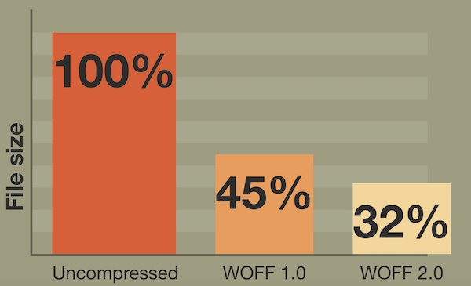
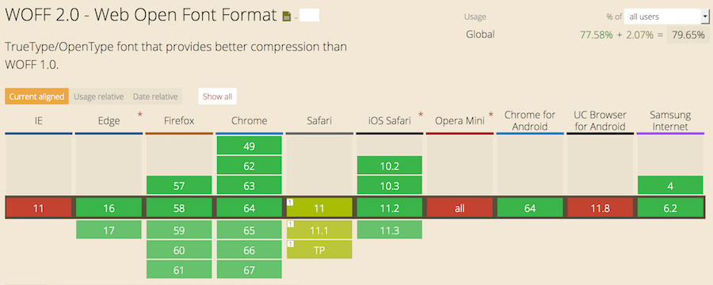
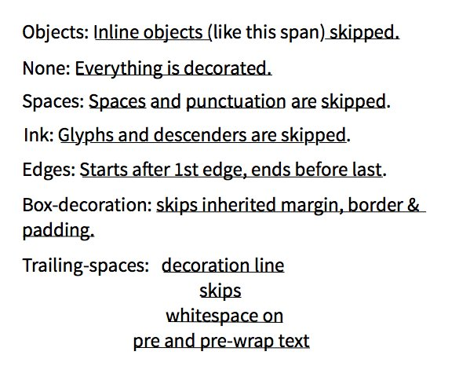
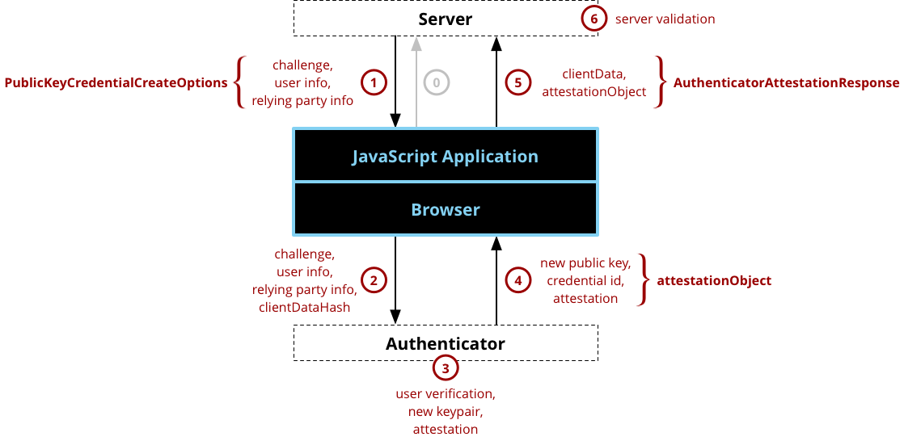
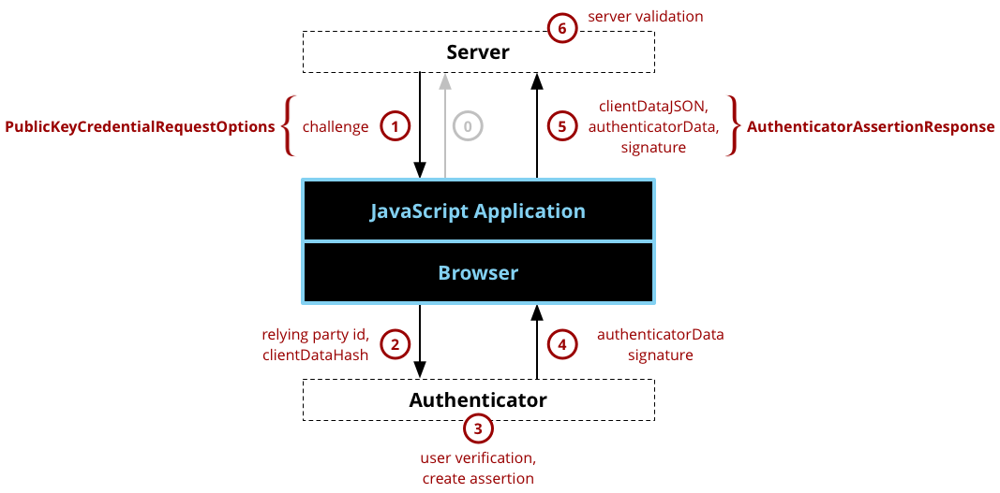

March @w3c - Meetings, talks, workshop deadline, etc. https://www.w3.org/participate/eventscal.html ...
5-6: #webcomponents #f2fmeeting https://github.com/w3c/WebPlatformWG/blob/gh-pages/meetings/18-03-Web-components.md by the @w3c Web Platform #WorkingGroup https://www.w3.org/WebPlatform/WG/ in #Tokyo
https://twitter.com/w3cdevs/status/96912954876699853022: @ConnectorKaren and @TzviyaSiegman present an update of #WebStandards in ebooks http://techforum.booknetcanada.ca/sessions/updates-from-the-digital-standards-frontlines/ #ebookcraft in #Toronto @w3cpublishing
https://twitter.com/w3cdevs/status/96913017779929497619-23: Web accessibility talks by @wai team: Judy Brewer, @sabouzah and @shawn_slh http://www.csun.edu/cod/conference/2018/sessions/index.php/public/presentations/view/322 #CSUNATC18 in #SanDiego #a11y
https://twitter.com/w3cdevs/status/96913017563504230423-29: joint Web of Things #IoT #InterestGroup #WorkingGroup #f2fmeeting https://www.w3.org/WoT/IG/wiki/F2F_meeting,_24-29_March_2018,_Prague,_Czech_Republic in #Prague, incl. #plugfest and #openday
Now speaking! #ebookcraft

https://twitter.com/w3cdevs/status/96913065870980300830 is the deadline to participate in the #Web5G #W3CWorkshop hosted by @GSMA https://www.w3.org/2017/11/web5g-workshop/#position-statements

https://twitter.com/w3cdevs/status/969130661050245121Congrats to editors Vladimir Levantovsky @raphlinus for releasing WOFF2.0 as the 401st #WebStandard #timetoadopt! https://twitter.com/svgeesus/status/969146408489095169
... Introduced in 2009, the Web Open Font Format (WOFF) was a milestone that marked the beginning of the #webfonts era. The idea was to specify a simple compressed file format for fonts, designed primarily for use on the #Web.
https://twitter.com/w3cdevs/status/969155110730379264Indeed, the #Spectre and #Meltdown attacks revealed early January can be exploited in browsers - since these attacks rely on precise timing, reducing the precision of http://performance.now() was quickly identified as a way to reduce the risks of exploitation
High Resolution Time is the spec that defines http://performance.now(), a precise and monotonic clock for Web apps.
It is republished as Candidate Recommendation by the Web Perf WG as it has needed a substantive update: the clock was too precise (!) https://www.w3.org/TR/2018/CR-hr-time-2-20180301/ https://twitter.com/w3c/status/969177837411426304
https://twitter.com/w3cdevs/status/969194392945819648In particular, @mdrejhon has been expressing detailed concerns about the impact of reduced accuracy for some use cases (e.g. gaming). If you have ideas or concerns, head to the github repo https://github.com/w3c/hr-time/
https://twitter.com/w3cdevs/status/969194397597405185The updated specification thus no longer suggests a minimum level of accuracy. There is still ongoing discussion on what the new recommendation should be https://github.com/w3c/hr-time/issues/56
https://twitter.com/w3cdevs/status/969194395642810368See @firefox approach to reducing the risks associated with #Spectre and #Meltdown https://blog.mozilla.org/security/2018/01/03/mitigations-landing-new-class-timing-attack/
And find out more about #Spectre and x-origin leaks in this recently published analysis from @arturjanc and @mikewest https://twitter.com/arturjanc/status/996535217023344640
https://twitter.com/w3cdevs/status/969194401984663554There are more to addressing #Spectre and #Meltdown than just reducing timers accuracy. The various browser vendors have started reporting on the work they see ahead of them
https://twitter.com/w3cdevs/status/969194399841292288.@MSEdgeDev 's approach on #Spectre and #Meltdown https://blogs.windows.com/msedgedev/2018/01/03/speculative-execution-mitigations-microsoft-edge-internet-explorer/#hlgJckks2qu9Vxhm.97
https://twitter.com/w3cdevs/status/969194406652891136.@webkit 's approach on #Spectre and #Meltdown https://webkit.org/blog/8048/what-spectre-and-meltdown-mean-for-webkit/
https://twitter.com/w3cdevs/status/969194404253749248.@googlechrome 's approach on #Spectre and #Meltdown https://developers.google.com/web/updates/2018/02/meltdown-spectre
https://twitter.com/w3cdevs/status/969194409265975296... WOFF 2.0 significantly improves font compression. It offers 30% average gain over WOFF 1.0, with peaks above 50% in some cases!!
https://twitter.com/w3cdevs/status/969602125499166721... WOFF1.0 was released in Dec. 2012 and has been widely deployed since. To better lower the use of network bandwidth, while still allowing fast decompression (even on mobile devices!), the @w3c WebFonts #WorkingGroup worked on WOFF2.0
https://twitter.com/w3cdevs/status/969602123750170624... All modern Web browsers now support the WOFF 2.0 format for downloadable fonts https://caniuse.com/#feat=woff2
https://twitter.com/w3cdevs/status/969602130146414592... WOFF 2.0 is widely used on production #websites. It supports the entirety of the #TrueType and #OpenType specifications, including Variable fonts, Chromatic fonts, and font Collections. Read the doc. for more details: https://www.w3.org/TR/2018/REC-WOFF2-20180301/
https://twitter.com/w3cdevs/status/969602128527396865For this special election, the @w3c membership will fill 1 seat. Learn about the 3 great nominees and their respective statements: Andrew Betts @triblondon, Kenneth Rohde Christiansen @kennethrohde, and Theresa O'Connor @hober https://www.w3.org/2018/03/05-tag-nominations - Best of luck!
As highlighted last month, the new @w3c process document is granting an additional seat to @w3ctag (6 elected members instead of 5) https://www.w3.org/2018/Process-20180201/ https://twitter.com/w3c/status/970620747227041803
https://twitter.com/w3cdevs/status/970750379108585472https://twitter.com/w3cdevs/status/957974903122219008
https://twitter.com/w3cdevs/status/970750381792878593The #Web turns 29 today and only half of the world’s population is online. To connect the other half, we #developers have to help close the digital divide and make the Web work for all! @timberners_lee @w3c #HappyBirthdayWWW https://twitter.com/w3c/status/973189990283915264
https://twitter.com/w3cdevs/status/973191845823033344The @w3c @csswg publishes today #CSS Text Decoration Module Level 4 https://www.w3.org/TR/css-text-decor-4/ @fantasai @kojiishi #FirstPublicWorkingDraft https://twitter.com/w3c/status/973466477947949056
It builds upon CSS Text Decoration Module Level 3 https://drafts.csswg.org/css-text-decor-3/ from which it imports text-decoration-skip - which won't make it in Level 3 since it needs redefinition for extensibility, and brings more control on underlines and text shadows
https://twitter.com/w3cdevs/status/973571521754140672An example of what text-decoration-skip looks like can be found in @mmosley CSS Trick article https://css-tricks.com/almanac/properties/t/text-decoration-skip/
https://twitter.com/w3cdevs/status/973571525487005696As all other @csswg documents, it is developed on github at https://github.com/w3c/csswg-drafts and issues are tracked specifically at https://github.com/w3c/csswg-drafts/labels/css-text-decor-4
https://twitter.com/w3cdevs/status/973571528276267008.@w3c invites Implementations of the Timed Text Markup Language 2 (TTML2) https://www.w3.org/TR/ttml2/ #timetoimplemeni https://twitter.com/w3c/status/973466481571827712
TTML is notably used in the TV industry for delivering captions, subtitles, and other metadata for television material repurposed for the Web. For that work, TTML1.0 received an Emmy award @iemmys in 2016 https://www.w3.org/2016/01/emmyawardttml.html

https://twitter.com/w3cdevs/status/973618296510730240TTML2 adds representation of textual information with which stylistic, layout, and timing semantics are associated for interchange and processing.
https://twitter.com/w3cdevs/status/973618302823141376The new charter of the @w3payments Working Group that encompasses this roadmap has been approved https://www.w3.org/Payments/WG/charter-201803.html http://lists.w3.org/Archives/Public/public-new-work/2018Mar/0003.html - find out more on the group on its home page https://www.w3.org/Payments/WG/ https://twitter.com/w3cdevs/status/956510869567000576
https://twitter.com/w3cdevs/status/973968105927036928if you're not already watching #CSS expert @jensimmons (member of the @csswg too), please check out her videos including https://www.youtube.com/watch?v=EashgVqboWo&feature=youtu.be https://twitter.com/jensimmons/status/973907498360033280
https://twitter.com/w3cdevs/status/973974549053231104The Async Clipboard API is part of the Clipboard API WD https://www.w3.org/TR/clipboard-apis/#async-clipboard-api with its accompanying explainer at https://github.com/w3c/clipboard-apis/blob/master/explainer.adoc - from the very repo where that spec is developed by the Web Platform Working Group https://twitter.com/ebidel/status/974035369795584001
https://twitter.com/w3cdevs/status/974266247402618881The charter has now been finalized https://www.w3.org/2018/03/jsonld-wg-charter.html and is open for comments before final approval - the path to #JSONLD 1.1 is opening up! https://twitter.com/w3c/status/974277570958000128 https://twitter.com/w3cdevs/status/956888721835593729
https://twitter.com/w3cdevs/status/974283848468090880This is an update to the Candidate Recommendation of #CSS Fonts Module level 3 published 5 years ago (!) https://www.w3.org/TR/css-fonts-3/ which moves a few items to the next level (4 https://www.w3.org/TR/css-fonts-4/) https://twitter.com/w3c/status/974221445202137088
Its test suite contains 475 test cases http://test.csswg.org/harness/suite/css-fonts-3_dev - you can contribute test cases on our shared test suite repository at https://github.com/w3c/web-platform-tests/tree/master/css/css-fonts https://www.w3.org/Style/CSS/Test/
https://twitter.com/w3cdevs/status/974321129107214337The tests are then run automatically across 4 browsers on a daily basis and the results published on our public test dashboard https://wpt.fyi/css/css-fonts
https://twitter.com/w3cdevs/status/974321133741838338If you have a bug or an idea, please submit it https://github.com/w3c/csswg-drafts/labels/css-fonts-3 and learn how to participate in CSS work: https://www.w3.org/Style/CSS/current-work
https://twitter.com/w3cdevs/status/974321135453196288Our friends @samsunginternet are organizing a cross-browser conference for Web developers next month in San Jose, CA https://samsungcreate.com/, with speakers from the @w3c community (disclaimer: @w3cdevs may or may not get a chance to be there)
https://twitter.com/samsunginternet/status/973261698844028929
https://twitter.com/w3cdevs/status/974337057874100224Flying out to #Paris for @mozdenet Hack on MDN over the next 3 days, focusing on browser compatibility data https://github.com/mdn/browser-compat-data ^ @dontcallmeDOM
https://twitter.com/w3cdevs/status/974547421953900545As we mentioned a couple of months ago, these APIs come with a stronger privacy-by-design approach (compared to e.g. DeviceOrientation) and bring a cleaner model for managing sensors (e.g. multiple ones, high performance) https://twitter.com/w3cdevs/status/956181984681840642
The Generic Sensor and its 5 associated concrete sensor (accerometer, magnetometer, gyroscope, orientation, ambient light) APIs have reached Candidate Recommendation status #timetoimplement
The APIs enable Web apps to integrate more closely with the surrounding environment. https://twitter.com/w3c/status/976062088534773761
The Generic Sensor-based APIs were already available in Chrome, they're now “Under Consideration” in @MSEdgeDev https://twitter.com/anssik/status/1035525173477302272
https://twitter.com/w3cdevs/status/976094073483390977It is also under consideration in @servoDev for its possible usage in the context of #WebVR/#WebXR https://twitter.com/anssik/status/972496244731011072
https://twitter.com/w3cdevs/status/976094078214471680You can find the API implemented as an origin trial in @GoogleChromeDev https://www.chromestatus.com/features/5698781827825664
https://twitter.com/w3cdevs/status/976094076159385601and if you would like to help with the spec, the Generic Sensor spec is developed in https://github.com/w3c/sensors and you can find the repos for the concrete sensors from https://www.w3.org/2009/dap/#roadmap
You can also help with the test suites at e.g. https://github.com/w3c/web-platform-tests/tree/master/sensors
https://twitter.com/w3cdevs/status/976094082433994753If you would like to see the API more widely implemented, bring your use cases to the relevant places:
- @firefoxdev https://bugzilla.mozilla.org/show_bug.cgi?id=1432631
- @MSEdgeDev https://wpdev.uservoice.com/forums/257854-microsoft-edge-developer (entry to be created)
- @webkit https://bugs.webkit.org/ (bug to be filed)
https://twitter.com/w3cdevs/status/976094080412332032#WebAuthn enables strong authentication using securely-held public keys with user content, rather than #passwords - given how fragile passwords are, this is a pretty big deal.
A major step forward for better security, privacy and usability on the #Web with the publication of the Web Authentication specification as #CandidateRecommendation https://www.w3.org/TR/2018/CR-webauthn-20180320/ #timetoimplement https://twitter.com/w3c/status/976062090552270850
https://twitter.com/w3cdevs/status/976111114739175426This is not "just" about 2-factor auth - in the future, it should also help replace passwords as 1st auth mechanism.
@mozhacks gives a good intro to the spec https://hacks.mozilla.org/2018/01/using-hardware-token-based-2fa-with-the-webauthn-api/
It even has its own sticker now (credits to @apowers313), so…
https://twitter.com/jamespugjones/status/981012488991907840
https://twitter.com/w3cdevs/status/976111116471455750The spec use case scenarios illustrate how it all works: https://www.w3.org/TR/webauthn/#use-cases - it can be used both during the registration and the authentication phases.
@MDN already has a good overview of how to use the API https://developer.mozilla.org/en-US/docs/Web/API/Web_Authentication_API
https://twitter.com/w3cdevs/status/976111118371491840The API is available in @firefox v60+ and in @googlechromedev v65+ behind a flag, with support limited to USB U2F tokens at the moment.
The spec is developed at https://github.com/w3c/webauthn/
https://twitter.com/w3cdevs/status/976111124373475328This work has been made possible thanks to the coordination with the @FIDOAlliance that ensured a set of #FIDO2 Client To Authenticator Protocol (#CTAP) implementations
https://twitter.com/w3cdevs/status/976111122918072323It builds upon the Credential Management API which enable Web apps to rely on the browser credential management store https://w3c.github.io/webappsec-credential-management/
https://twitter.com/w3cdevs/status/976111121189961728The mission of the @W3C Credible Web Community Group is to help shift the Web toward more trustworthy content, primarily through data sharing, in the style of @schemaorg_dev, using existing data standards like #JSONLD https://www.w3.org/community/credibility/2018/03/20/getting-started/ https://twitter.com/sandhawke/status/976122373572386817
https://twitter.com/w3cdevs/status/976128411654537217@ConnectorKaren https://twitter.com/LauraB7/status/976829079902150657
https://twitter.com/w3cdevs/status/976863104603770885Zbývá nám několik míst na @w3c #WoT #OpenDay v Praze v pondělí 26. března. Pokud máte zájem o účast, napište nám DM. Podívejte se na program https://www.w3.org/WoT/IG/wiki/F2F_meeting,_24-29_March_2018,_Prague,_Czech_Republic#Mon.2C_26_Mar_2018:_OpenDay #IoT
A few seats left to attend the @w3c #WoT #OpenDay event in #Prague, on Monday 26 March. Please DM us if you're interested! Check topics of the day https://www.w3.org/WoT/IG/wiki/F2F_meeting,_24-29_March_2018,_Prague,_Czech_Republic#Mon.2C_26_Mar_2018:_OpenDay #IoT
https://twitter.com/w3cdevs/status/977187483288068096This month's http://chapters.io #meetup is about #WebNFC by @justinribeiro https://www.meetup.com/Pittsburgh-Code-Supply/events/248733776/ cc @briankardell - 28 March, Pittsburgh
https://twitter.com/w3cdevs/status/977576714091089921Marking specs as superseded is one of the additions that the latest W3C process enabled https://twitter.com/w3cdevs/status/959076749291196416
HTML5 is superseded, long live HTML5.2! https://twitter.com/chaals/status/978562662551433216
https://twitter.com/w3cdevs/status/978565148616085504It is in pre-standardization, developed by the Web NFC #CommunityGroup https://www.w3.org/community/web-nfc/ on their github repository https://github.com/w3c/web-nfc
#WebNFC is an experimental browser #JavaScript API to interact with NFC devices https://w3c.github.io/web-nfc/ - it allows e.g. both to read and write to #NFC tags from within a Web app as described in its associated use cases https://w3c.github.io/web-nfc/use-cases.html https://twitter.com/w3cdevs/status/977576714091089921
https://twitter.com/w3cdevs/status/978618365584592896Its usage as an integration point between the Web and the physical world is discussed in this introductory article https://01.org/blogs/2015/web-nfc-physical-web
https://twitter.com/w3cdevs/status/978618368965140480It is available in @googlechromedev on android behind a flag (#enable-webnfc)
https://twitter.com/w3cdevs/status/978618367333482497Hear from @zolkis (one of the spec editors) how to use it for #IoT provisioning https://www.youtube.com/watch?v=pQwh-rRKDg0
https://twitter.com/w3cdevs/status/978618371372613632Don't miss the (both physical and online) meetup tomorrow if you want to learn more https://www.meetup.com/fr-FR/Pittsburgh-Code-Supply/events/248733776/?eventId=248733776
https://twitter.com/w3cdevs/status/978619468149649408Friends let their friends know that w3schools is in NO WAY related to @w3c'>@w3c whereas @w3c'>@w3c is collaborating with @MDN on https://developer.mozilla.org/en-US/docs/ https://twitter.com/revoltpuppy/status/978783474046795782
Learn #webdevelopment from @w3cx instead! https://w3cx.org
https://twitter.com/w3cdevs/status/978963767378825218If you're using or developing #JavaScript libraries that are used to display charts and diagrams, this new #WAI-ARIA module brings new roles (i.e. markup annotations) that can help make their content more accessible - make sure to check them out!
#WAI-ARIA Graphics and its associated #accessibility API Mappings have now been published as Candidate Recommendation #timetoimplement #A11Y
https://www.w3.org/TR/2018/CR-graphics-aria-1.0-20180329/
https://www.w3.org/TR/2018/CR-graphics-aam-1.0-20180329/ https://twitter.com/w3cdevs/status/961252466426892292
https://twitter.com/w3cdevs/status/979352003381022720These roles have already found implementation on a number of browser/platform/assistive tooling combination https://w3c.github.io/test-results/graphics-aam/
https://twitter.com/w3cdevs/status/979352005088038913You can now read the detailed report from @TzviyaSiegman of the event https://www.w3.org/blog/2018/03/publishing-w3c-goes-to-ebookcraft/ where you'll learn from @rallyfora11y that “the rules for dating and ebooks are pretty similar” (who knew?) https://twitter.com/w3c/status/979064682043625473
https://twitter.com/w3cdevs/status/979367107770056704